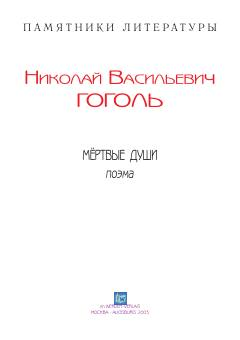

МДXIX asr Rossiya jamiyatining illatlarini fosh etuvchi buyuk rus satirik asari.
Ushbu asar rus adabiyotining durdona asarlaridan biri bo'lib, unda XIX asr Rossiya jamiyatining illatlari va insoniy qiyofalar satirik tarzda tasvirlangan. Bosh qahramon Chichikovning o'lik jonlarni sotib olish bo'yicha qilgan sarguzashtlari orqali o'sha davr ijtimoiy hayoti va feodal tuzumning tanazzuli ochib beriladi.